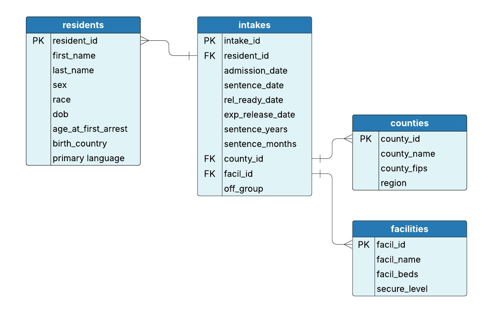

Lesson 5 Exercise
The case of the lost intake report

The Data and Research Unit was preparing a quarterly intake report for department leadership. The SQL query had been carefully written, tested, and saved along with well-organized summary notes describing each part of the query. Unfortunately, during a system migration, the SQL code was lost.
Thankfully, the summary notes were stored in a separate documentation system and remain intact. With a deadline fast approaching, a team member has been assigned to reconstruct the original query using only these summary notes.
Your task is to write the SQL query based on the recovered documentation below. Once completed, the output will help identify how many individuals were admitted in the last 6 months, grouped by facility and intake month. You can refer to the ERD above to review table structure and column names.
/*
This query calculates the number of individuals admitted to each facility in the last 6 months.
COUNT is used to total the number of admission_date entries.
The results are grouped by facility and the exact admission date.
The facilities table provides the facility name (facil_name), which should be labeled as Facility.
The intakes table contains the admission data. It is joined with the facilities table using facil_id.
The query only includes records where the admission_date is within the past 183 days (6 months) from the current date, using the JULIANDAY() function.
*/Write your SQL query below:
Show the answer
SELECT
i.admission_date,
f.facil_name AS Facility,
COUNT(i.admission_date) AS TotalAdmissions
FROM
intakes AS i
LEFT JOIN
facilities f ON i.facil_id = f.facil_id
WHERE
julianday('now') - julianday(i.admission_date) <= 183
GROUP BY
i.admission_date,
f.facil_name;The Debugging Dilemma
A team member was tasked with writing a query for the “Admissions by County” report, which shows the number of individuals admitted over the past year, grouped by county name. They attempted to write the code but keep running into an error when they try to execute it.
After multiple failed attempts to fix it themselves, they’ve asked you to review the code for quality assurance. Your job is to identify and correct any errors so the query runs properly and returns the expected results. You can refer to the ERD above to reviewtable structure and column names.
Goals of the query:
- Count how many people were admitted over the last 365 days.
- Group the results by county name.
- Use the intakes and counties tables.
- Match
county_idfrom the intakes table withcounty_idfrom the counties table. - Use
JULIANDAY()to filter for admissions within the last 365 days. - Alias the result of the count as
TotalAdmissionsand county name asCounty.
Instructions:
Review the query and identify any errors (syntax, logic, or incorrect references).
Correct the code so it executes successfully and returns accurate results.
Write a short note explaining what was wrong and how you fixed it.
SELECT
COUNT(admission_date) AS TotalAdmissions,
c.county_name AS County
FROM
intakes AS i
JOIN
counties AS c ON i.county_id = counties.county_id
WHERE
admission_date >= julianday('now') - 365
GROUP BY
County;Show the answer
/*
Corrections:
Corrected the JOIN condition to reference the alias c instead of repeating the table name counties.
Fixed the date filter by using julianday()` on both sides to ensure proper date math.
Used the full column reference i.admission_date in COUNT() for clarity and consistency.
*/
SELECT
COUNT(i.admission_date) AS TotalAdmissions,
c.county_name AS County
FROM
intakes AS i
JOIN
counties AS c ON i.county_id = c.county_id
WHERE
julianday('now') - julianday(i.admission_date) <= 365
GROUP BY
County;